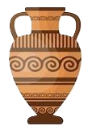
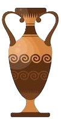
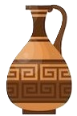
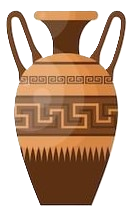
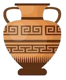

Święte Wybrzeże Morza Egejskiego & Sanktuarium Zeusa
Witaj na oficjalnej ekspozycji fotograficznej z wyprawy pod mityczny tron Zeusa oraz do świętego miasta Dion. Przeglądaj kadry plaży olimpijskiej, fal Morza Egejskiego oraz starożytnych świątyń, mozaik, monastyrów w eleganckiej panoramie widokowej.
Odwiedziny bogów
Aktywny rejestr odwiedzin i hołdów składanych pod mitycznym tronem Zeusa na Olimpie. Tłem dla każdej cyfry licznika są zabytkowe greckie wazy ceramiczne, podpisane zgodnie z ich kształtem.

Amfora
Dwuuche naczynie na oliwę olimpijską i attyckie wino.

Lutrofora
Smukłe naczynie obrzędowe do rytualnych obmyć świętą wodą.

Ojnochoe
Elegancki dzban z trójdzielnym wylewem do nalewania nektaru.

Pelike
Pękata amfora o stabilnej podstawie używana na uroczystych ucztach.

Krater
Monumentalne naczynie sympozjonów do mieszania wina z wodą.
Ekspozycja Fotograficzna
Wszystkie 472 kadry otoczone antyczną ramką meandrową dopasowaną do proporcji ujęcia. Używaj klawiszy ← / → lub przycisków Α / Ω do nawigacji między zdjęciami.
Powitanie z Riwierą Olimpijską
Szlak Wyprawy Olimpijskiej
Główne etapy ekspedycji przez macedońską i tesalską Grecję
Riwiera Olimpijska & Morze Egejskie
Plaża w Paralii, Zatoka Termajska, wschody słońca i morska bryza u stóp Olimpu.
Święte Miasto Dion
Sanktuarium Zeusa Najwyższego, starożytne mozaiki willi Dionizosa i rzymskie łaźnie.
Masyw Olimpu & Wąwóz Enipeas
Litochoro, mityczne wanny Afrodyty i Zeusa, stary monastyr św. Dionizego i szczyt Mitikas.
Wiszące Monastyry w Meteorach
Kalambaka, potężne iglice z piaskowca, klasztory Varlaam i Wielki Meteoron zawieszone w chmurach.